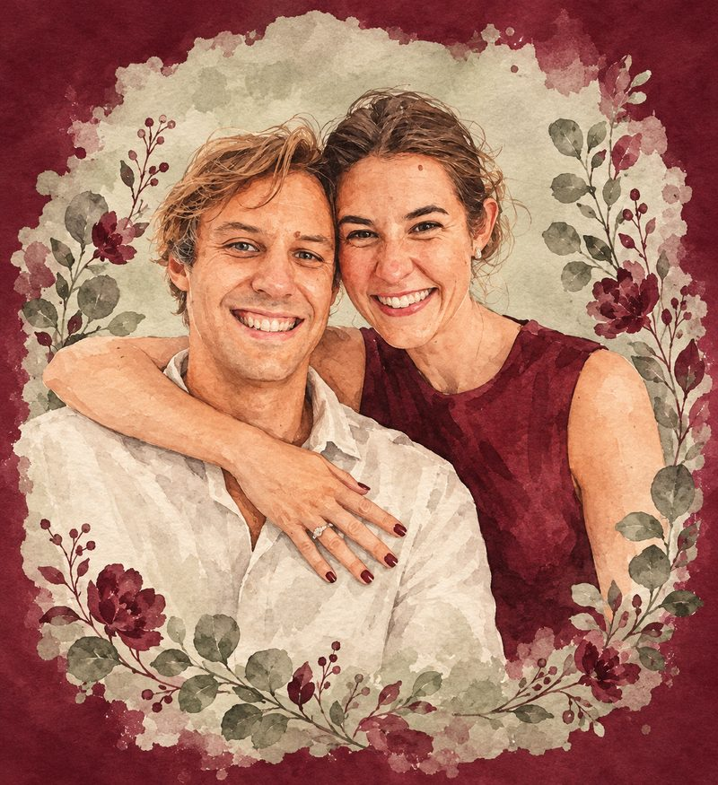

14.00
Vigsel
Alla är varmt välkomna att dela vigseln med oss i kyrkan.

Save the date
27 maj 2028
Grebbestad · Bohuslän
Boka in dagen – inbjudan kommer, och mer information uppdateras här på sidan.
Vi gifter oss
27 maj 2028
Grebbestad · Bohuslän
Välkomna
Vi ser så mycket fram emot att fira den här dagen tillsammans med er – vid havet i Grebbestad, en försommardag på västkusten.
Alla är varmt välkomna att dela vigseln med oss i kyrkan.
Middag, tal och dans in på natten för er som fått en inbjudan.
Lördag 27 maj
Söndag 28 maj
Stannar du kvar över söndagen? Då rundar vi gärna av helgen tillsammans med en lugn förmiddag av brunch och bastu på TanumStrand Spa & Resort – med havsutsikt, bastuvärme och gott om tid att prata om gårdagen.
Det är helt frivilligt och man kommer och går som man vill. Brunch och bastu bokar och betalar var och en själv direkt hos TanumStrand.
Resa & boende
Grebbestad och TanumStrand har gott om boende, från hotell till camping och stugor. Slutet av maj är före högsäsongen, men boka gärna i god tid.
Om svar anhålles
Har du fått en inbjudan till festen? Meddela oss senast [datum] om du kommer, och om du har några allergier eller specialkost.
Bra att veta
Klädkoden är kostym. Tänk på att majkvällar vid havet kan bli svala.
Er närvaro är den finaste gåvan, så vi önskar oss inga presenter. Vill man ändå uppmärksamma dagen blir vi väldigt glada för ett högst frivilligt bidrag till vår bröllopsresa.
Tal är högst frivilligt – ingen kommer att tycka sämre om dig för att du bara äter, skålar och njuter. Känner du ändå att du måste, anmäler du dig till våra toastmasters Jonathan och Elin, som ser till att ingen talar längre än efterrätten orkar vänta.
Spex undanbes däremot med största allvar. Vi har sett tillräckligt.
Barn är hjärtligt välkomna! När basen börjar dunka framåt kvällen lämnar vi dock gärna över dansgolvet till de vuxna – så länge de hänger med, vill säga. Barn som dansar bättre än sina föräldrar är undantagna.
Hör gärna av dig till oss:
Malin – malinjonson96@gmail.com
Gustav – gustavsp91@gmail.com